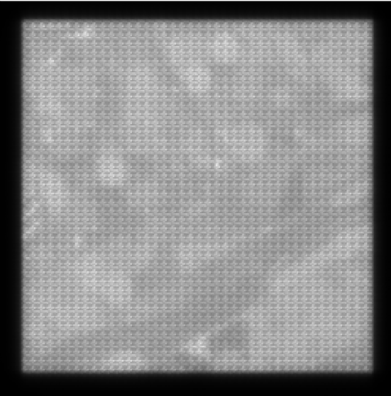
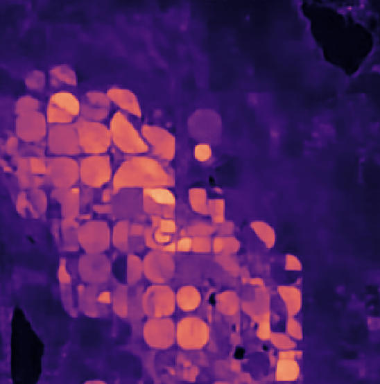
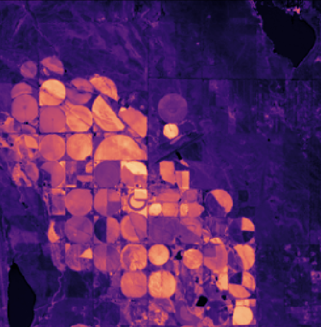
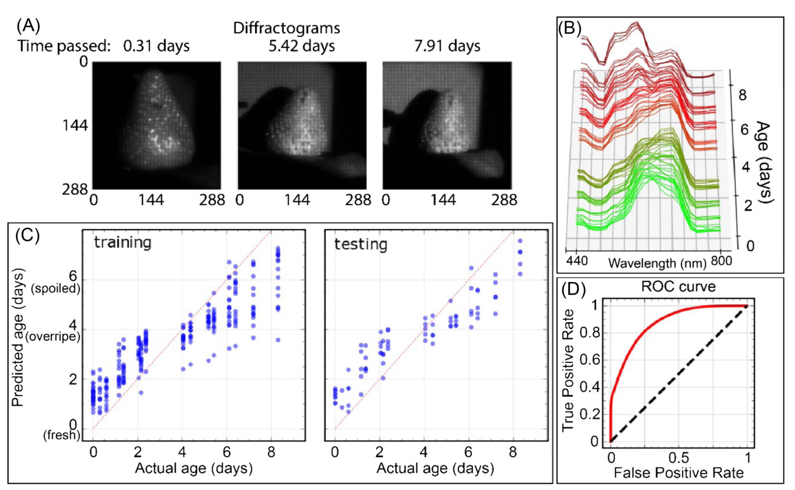
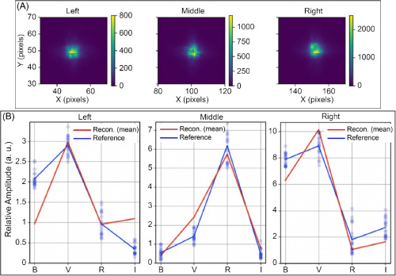

Validation & Demos
From Lab to Field: Proven Performance
Our technology transforms standard cameras into high-definition spectral sensors. Below are validation experiments demonstrating how Lumos diffractograms capture invisible decision-making information across industrial, medical, agricultural, and scientific fields.
Lumos technology is versatile. Depending on the application, we can optimize for Speed/Efficiency (Direct Inference) or Scientific Detail (Spectral Reconstruction). Explore the examples below to see both workflows in action.
Pathway A: Direct Inference
The Efficiency Paradigm: Answers, not cubes. In these examples, we bypass the heavy generation of 3D data cubes. Algorithms extract the answer directly from the raw, compressed Diffractogram. This enables real-time performance on edge devices or efficient transmission to the cloud.
Industry: Manufacturing, Recycling, and Quality Control.
The Problem: In high-speed sorting lines, contaminants often look identical to the product. Standard RGB cameras cannot distinguish between a clear PET plastic pellet and a clear PVC pellet, or detect a clear varnish coating on a colored object. Hyperspectral cameras can detect this, but the data volume (gigabytes per minute) is often too heavy for real-time processing.
The Lumos Result: In this simulation using real Lumos camera measurements, we sorted multi-colored pellets. Half were “pure,” and half were coated with an invisible varnish.
- Method: We bypassed spectral reconstruction entirely, training a classifier to run directly on the video feed.
- Efficiency: The system performed accurate classification using a stream of 0.37 MB frames, whereas a comparable 25-band spectral camera would require 15.87 MB per frame.
By processing the diffractogram directly, we achieve a 43x reduction in data bandwidth. This allows for higher frame rates on the sorting line and reduces the computational load on the sorting robot’s embedded processor.
Real-time Inference: The video shows the system correctly identifying Tainted (red) vs. Pure (green) pellets despite them looking identical in RGB.
Note the massive file size difference of Lumos Diffractogram vs 25-band hyperspectral cube (15.87 MB vs 0.37 MB per frame).
Industry: Supply Chain, Food Storage, and Phenotyping.
The Problem: Monitoring the ripening or spoilage of produce requires continuous observation. A standard camera can only see external color changes, which often happen too late. A hyperspectral camera could track internal chemistry (sugar/water content), but recording a continuous spectral video over days would generate unmanageable amounts of data (TB of storage).
The Lumos Result: We monitored an avocado rotating on a turntable every 10 minutes for 10 days.
- Capabilities: From the raw diffractogram data, we successfully 1) segmented the avocado from the background and 2) generated a localized estimate of the ripening index over time.
- Data Volume: The full 1,000-frame video at high resolution (800x600) occupied just ~922 MB. A comparable 100-band hyperspectral video would have exploded to ~50.4 GB.
Because Lumos uses a snapshot architecture, each frame is captured instantly. This allows us to image the rotating avocado without the “shearing” or motion artifacts that would ruin the image on a traditional line-scanning (push-broom) spectral camera.
Long-Duration Monitoring: The graph tracks the estimated ripening index. The snapshot capability ensures distortion-free imaging of the rotating 3D object.
Industry: Satellite Earth Observation and Environmental Monitoring.
The Problem: Satellites generate Terabytes of data, but radio downlinks are a thin pipe. Operators often have to discard vast amounts of hyperspectral data because they cannot transmit it to Earth.
The Lumos Result: We simulated a Lumos sensor in orbit using public Landsat 8 data. We trained a neural network to detect a specific vegetation signature.
- Method: The model estimated the per-pixel abundance (0-100%) of the vegetation directly from the diffractogram.
- Efficiency: Instead of downlinking a massive data cube, the satellite could downlink the lightweight diffractogram (for ground processing) or process it on-orbit and downlink just the abundance map.
This experiment validates that the encoded “texture” of the diffractogram contains sufficient information to perform sub-pixel abundance estimation. This effectively solves the downlink bottleneck, allowing small-sats to deliver hyperspectral-grade intelligence.



Comparison of the predicted vegetation abundance (Center) vs. the Ground Truth (Right), derived solely from the compressed input (Left).
Pathway B: Spectral Reconstruction
We show in these examples how spectral reconstruction can be used to perform robust discrimination and prediction tasks for a wide class of problems and applications.
Sector: Diagnostics, Surgery, Pathology, Biological Analysis.
The Problem: Healthy tissue and tumors, or different organ structures, often appear identical to the human eye and RGB cameras (various shades of pink). Surgeons currently rely on invasive biopsies or chemical dyes to differentiate them.
The Lumos Result: We imaged ex-vivo chicken tissue containing both lung and trachea.
- Method: We reconstructed the spectral cube and applied a simple Linear Discriminant Analysis (LDA).
- Outcome: Despite the visual similarity, the system cleanly separated the tissues based on their spectral signatures. This proof-of-concept confirms that Lumos technology can provide the spectral discrimination necessary for biological applications.
For a detailed breakdown of the reconstruction accuracy and the Linear Discriminant Analysis (LDA) classification, please refer to our published paper in Optica.

Industry: Supply Chain and Predictive Quality.
The Problem: Spoilage often begins chemically before it becomes visible. Supply chain managers need to know not just if a fruit is bad, but when it will go bad.
The Lumos Result: We monitored strawberries continuously over 8 days.
- Method: By reconstructing the spectral cubes, we tracked the degradation of the “Green Peak” (chlorophyll) and shifts in the “Red Edge.”
- Outcome: A regression analysis performed on the reconstructed spectra could predict the exact age of the fruit and classify “Fresh” vs. “Spoiled” with high accuracy before visible mold appeared. This proves the reconstructed spectra has sufficient fidelity for predictive regression models.

Industry: Scientific Imaging and Space Domain Awareness.
The Problem: Traditional telescopes use mechanical filter wheels to capture different colors (e.g., Johnson-Cousins B, V, R, I filters). This is slow (sequential) and inefficient (absorptive filters block light).
The Lumos Result: We simulated a stellar field and captured the data in a single snapshot.
- Software-Defined Bands: Instead of using physical filters, we reconstructed the spectral response curves mathematically. We didn’t need to reconstruct 100 arbitrary bands; we solved directly for the B, V, R, and I transmission curves.
- Outcome: We recovered accurate photometric ratios from a single exposure, proving that one Lumos sensor can replicate the function of a multi-filter mechanical assembly without the moving parts.
This experiment highlights the power of A Posteriori Basis Selection. We captured the light first, then decided after the fact that we wanted to view the data through Johnson-Cousins filters. This flexibility is impossible with traditional hardware filters.

Ready to deploy this technology?
We are moving from R&D to commercial scale and seeking strategic partners.